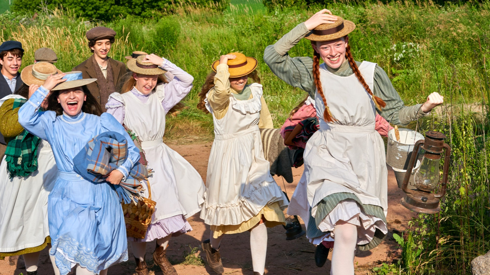
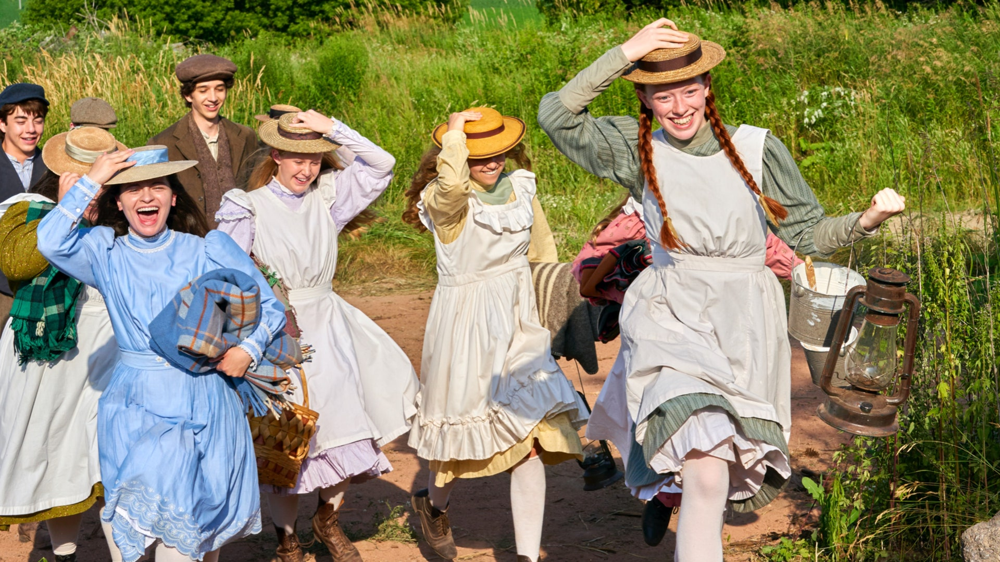

SINOPSIS
La serie se remonta al año 1896 en la Isla del Príncipe Eduardo, cuando los hermanos Matthew y Marilla Cuthbert, ya de avanzada edad, deciden adoptar un niño del orfanato para que ayude con las tareas de su hogar en la granja de Green Gables. Matthew fue a recoger al niño a una estación del tren cuando, para su sorpresa, se da cuenta que habían enviado a Anne Shirley, una niña de 13 años. A pesar de la confusión, Matthew se lleva a Anne a Green Gables.
Anne es una niña hablantina, con una gran imaginación y con muchas habilidades, las cuales habría adquirido a lo largo de su vida. Dentro de su pasado, sus padres murieron a los tres meses de haber ella nacido y había vivido toda su vida entre un orfanato y varias casas en las que ayudaba en los quehaceres, aunque, también había sufrido malos tratos. Cuando llegó a Green Gables se sintió en un lugar más seguro y sin malos tratos, sin embargo, Marilla se quedó atónita al darse cuenta que le habían traído a una niña, y desconfió de Anne. Tras perderle un broche a Marilla (que era un bien material preciado de ella) y pensar que Anne se lo había robado, la mandó inmediatamente al orfanato, pero la brocha reaparece, yendo Matthew por Anne para llevarla de nuevo a Green Gables. Al regresar, Marilla pide perdón a Anne por haber creído que se robó el broche y finalmente es adoptada por los Cuthbert. Sin embargo, en el pueblo donde ella habita -Avonlea- es rechazada, criticada y sufre de [bullying] y de prejuicios misóginos y clasistas. A pesar de las adversidades y de habitar en la sociedad canadiense de finales de siglo XIX, ella usa su imaginación y sus habilidades para superarse en medio del mundo que la rodea, y empieza a ser aceptada dentro del pueblo de Avonlea.
PRODUCIDA POR |
Niki Caro (1 episodio),Helen Shaver (2 episodios),Sandra Golbacher (1 episodio),David Evans (1 episodio),Patricia Rozema (1 episodio),Paul Fox (7 episodios),Amanda Tapping (4 episodios),Ken Girotti (2 episodios),Anne Wheeler (4 episodios),Kim Nguyen (1 episodio),Norma Bailey (3 episodios) |
ESCRITOR |
Kathryn Borel |
CALIFICACION |
PG (Canadá) +13 (Netflix).TV-PG (Estados Unidos). |
GENERO |
Drama, familiar |
FECHA DE ESTRENO |
19 de marzo de 2017 |
TRAILERS Y OTROS
Trailer temporada 1
Trailer temporada 2
Trailer temporada 3
Resumen de las 3 temporadas
Reseña sobre la serie
GALERIA
 



PUZZLE
 Puzzle mejor
Puzzle mejor